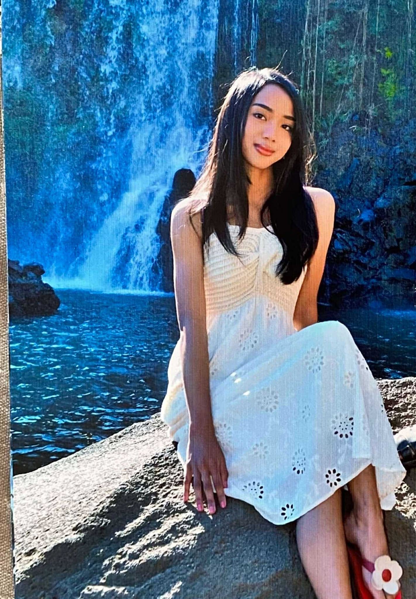

Bonjour, je m'appelle Koloina
Je viens de Madagascar, une île magnifique et pleine de contrastes. Passionnée de
voyage
et d’informatique, j’ai grandi dans un pays où la beauté naturelle côtoie les défis
quotidiens.
Malgré cela, j’ai eu une enfance épanouie, rythmée par les découvertes, les rencontres et les
moments passés avec ma famille.
Mon Parcours
Je suis originaire d’Antananarivo, la capitale de Madagascar, située au centre du pays.
Si j’ai toujours aimé les voyages, mon
meilleur souvenir reste une aventure dans le Sud, lorsque nous sommes
partis en voiture jusqu’à Tuléar.
Le trajet a duré deux jours à cause des routes abîmées, mais c’était ce qui rendait le voyage encore
plus amusant. Nous avons fait des arrêts dans des villages,
admiré des paysages à couper le souffle et partagé des moments uniques en famille. C’est ce genre
d’expérience qui m’a inspirée à explorer davantage mon pays et à en
partager la beauté avec le monde.
Aujourd’hui, je suis en France, où je poursuis mes études en réseaux et
télécommunications pour faire de la cybersécurité . Ce domaine n’est pas encore
développé à Madagascar, et il n’existe malheureusement pas d’études réservées pour cette spécialité dans
mon pays.
Mes Valeurs
Mon expérience dans le scoutisme a forgé en moi des valeurs essentielles : l’amour de
l’aventure,
l’esprit d’entraide et le respect de la nature. J’aime découvrir et discuter avec les habitants des
villages isolés, comprendre leurs modes de vie et capturer ces moments uniques. Ces
expériences m’ont
appris à apprécier les choses simples et à me dépasser.
Je suis une personne curieuse, qui aime apprendre, partager et capturer le moment
présent.
Je crois que chaque rencontre est une opportunité et que chaque difficulté est une occasion de grandir.
Mon Rêve
Mon objectif à long terme est de contribuer au développement numérique de Madagascar,
au-delà de la capitale.
Je souhaite également d’explorer davantage Madagascar, il reste tant de villes et de régions que
je n’ai pas encore découvertes, et je souhaite profiter de chaque voyage pour m’enrichir et contribuer à
leur développement, que ce soit par des initiatives numériques ou simplement en partageant leur beauté
avec le reste du monde.
"Voyager, c’est s’enrichir des cultures des autres tout en retrouvant un peu de soi-même à chaque
étape."